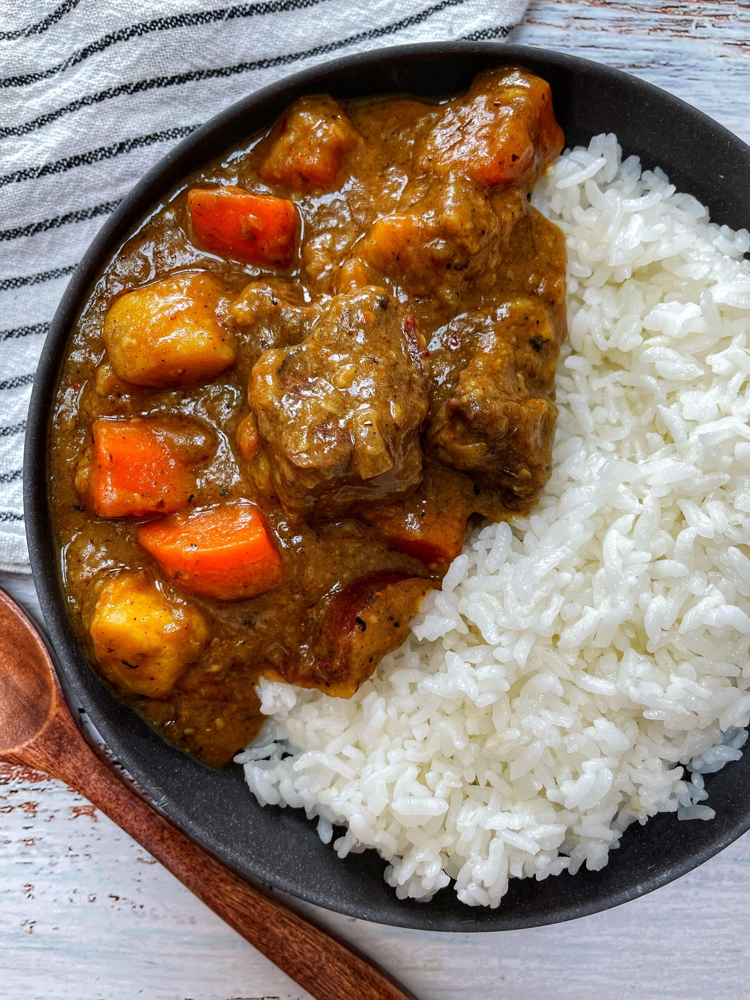

Home

Description
An adaptation of curry with a flavor unlike that of any other asian nation. Japanese curry is characterized by a sweet flavor, with a hint of spice and aromatics.
Japanese curry primarily served in three ways: over rice, with udon noodles and curry bread (a baked curry dumpling); It is also sometimes served with Katsu. Japanese
curry roux can be acquired from the international food section of most walmarts. Medium-hot will tend to be a Tostito's mild salsa level of heat.
Recipe
Serves 6
Ingredients
- 1 tablespoon oil
- 1 lb beef
- 1 onion diced roughly
- 1 tablespoon minced garlic
- 1 tablespoon minced ginger
- 1 lb carrots, peeled, cut bite size
- 1 lb potatoes, peeled, cut bite size
- 4 cups beef broth
- 1 grated apple/pear
- 1 tablespoon honey
- 1 tablespoon soy sauce
- (optional)1 tablespoon ketchup.
- 4 tablespoons butter
- 4 tablespoons flour
- 2-4 tablespoons of curry powder (to taste)
Directions
Curry
- In a large pan heat oil on medium high, then brown the beef on all sides then remove and set aside to rest.
- Add onion to pan and cook until tender.
- Add garlic and ginger. Sautee until fragrant.
- Return beef to pan, before adding curry roux (see below) and the remaining ingredients.
- Bring the pan to a boil, before reducing heat and simmering until the potatoes and carrots are soft. (About 20-25 minutes)
Curry Roux
- Meltbutter in pan over medium heat and simmer until it starts to brown.
- Sprinkle in the flour and curry powder while whisking, simmer until golden brown with a nutty smell.
Note: This roux can be cooled and saved in the fridge, it is equivalent to a box of retail curry roux.
Home